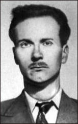

Bletchley Park is a site where Allies (British and Polish decoders) decrypted the Enigma Cipher read important parts of German radio traffic on important networks and was an invaluable source of military intelligence throughout the war.
One of the Cambridge Five, John Cairncross, worked at Blethcley Park in 1942-43. The 2015 film The Imitation Game was filmed on location at Bletchley Park, a Victorian house in Buckinghamshire that was a secret British facility during World War II. The movie stars Benedict Cumberbatch as Alan Turing, who worked at Bletchley Park to decipher German codes, including the Enigma code, with his assistants.